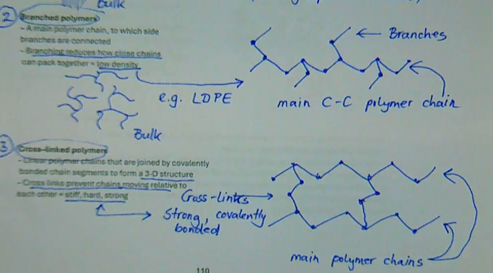

Mechanical Properties of Materials
- Strength: The amount of stress material can resist before failure(fracture or permanent deformation) We have tension, compression, shear, and bending.
- Stress is Force/Cross Sectional Area in Pascals
- Cross sectional area means the area perpendicular to the force
- Strain is Change in Length/Original Length. Is also unitless due to this.

see for more info
- Young’s modulus is the stiffness and the gradient of the elastic region in the graph(E=Change in stress/Change in strain) in Pascals
- Poisson's Ratio is the ratio of how thin a material needs to be when stretched or compressed by a certain amount.(Ratio=-StrainX/StrainDirection)
- Most metals ratio is around 0.3, polymers around 0.5
- Safety Factor means making it foolproof, saying the material is weaker than it is to allow for some flexibility. A safety factor of 4 means it should support 4 times the amount shown to support OR yield stress of the material is actual yield stress/safety factor
- Ductility is how much plastic deformation before fracture, or the strain
- Small ductility means it does not bend very much but fractures quickly, like glass
- High ductility is something like aluminium where it bends a lot before it fractures
- %Elongation=Length Change/Original Length * 100%
- %RA=Change in Area/Original Area * 100%
- Toughness is the energy required to fracture the material. The area under the stress strain curve, found by integrating. Usually, something strong is not tough and vice versa, but this isn’t always the case.
Crystals
- Generally, solid metals are crystalline structures. Crystals have long range order, meaning the atoms are very structured and ordered, in a lattice(long range order).
- Unit Cell is the repeating pattern going throughout the lattice, a single instance of the pattern
- 1/8th of an atom in each corner plus 1 atom in the middle so 2 atoms
- The atomic packing factor ot APF is volume of atoms/volume of unit cells, 68% for all BCC metals
- FCC has an atom in each corner and atom in each face, 4 atoms per unit cell with 12 neighbour atoms. This is a close packed structure meaning it can’t be any more packed
- A=4R/root2 with APF 74% which is the max packing in a cube. Examples are copper, aluminium, gold.
- HCP is a hexagonal close pack. 6 atoms, 74%, examples are magnesium, zinc, titanium
- When heating iron it actually changes from BCC to FCC, the atom rearranges its structure.
Ceramics
- Everything before is just metals when all the atoms are the same size.
- Ceramics have covalent and ionic bonds which are much stronger than metallic bonds. This means they are very strong but brittle, and they are also crystalline.
- What determines a ceramic is the balance charges where the result is electrically neutral, and relative size of ions, such as cations and anions bonding.
- A rock salt or sodium chloride structure can be seen as two interlocking FCC structures

- There’s no sea of electrons which conducts heat so they are thermally insulating
- Silicate structure is the most common type of ceramic such as rocks, clay, soil, sand. Denoted by a triangle with a dot in it. The unit cells are not stable but the whole thing when repeating the unit is stable as SiO2 as all oxygens are shared.
- When molten SiO2 is cooled slowly, it forms a ceramic, and when quickly, it forms glass. When cooled slowly, the atoms have time to rearrange themself into a ceramic. When cooled quickly, they don’t have time to rearrange and order themselves roughly/randomly
Crystallography
- Directions are in the form [u v w]
- Negative directions have a bar over them
- When the atomic spacing along one direction is the same as another, they are crystallographically equivalent. Thus families of directions exist, written as <100>. These just group directions which are the same so multiple families can exist.
- Planes in a crystal lattice are written as (h k l), also known as miller indices
- For families of planes we use {1 0 0}
Crystallography and Mechanical Properties
- The structure, property, and processing are all tied to each other in material science.
- Imperfections include:
- Point Defects(1D) which are vacancies(missing atoms), substitutional atoms(different element in the lattice), and interstitial atoms(the gap still left between the packing of atoms)
- Planar Defects(2D) or Dislocations(⊥), which can be edge dislocations where there’s an extra half plane in the lattice, or it doesn’t fit in the lattice, or screw dislocations where there is a twist in the lattice.
- Because of dislocations, bonds only need to break one at a time. Thus this takes much less energy and is much weaker.
- Slip is a dislocation movement, causing plastic deformation.
- Thus BCC metals are generally stronger(less ductile) than FCC metals
- HCP structures are close packed but planes are all aligned in one direction so slip is very hard, so these metals are often brittle and strong.
- In ceramics, as soon as the atoms move, the cations will touch each other(and anions too) making them repel and fracture rather than plastically deform like a metal where its cations and an electron sea.
- When applying a stress to ceramics the bonds just stretch but the atoms don’t actually move much since it has strong ionic and covalent bonds, giving it a high young's modulus.
- Ceramic’s imperfections are from porosity.
- Glass is amorphous so it is very strong but also highly brittle.
Solidification
- Heterogeneous nucleation is where it forms along the mould walls and this is much more common than homogeneous where it forms in the centre.
- Grains do not match together perfectly, and grain boundaries are very high in energy due to free bonds.
- Bulk atom is within the lattice, forms all bonds. Surface atoms have free bonds, the ones at the edges.
- Equiax means even dimensions in all directions.
- The middle can be equiaxed grains, columns can meet each other, holes/pores can be present, and dendrite formations, where it grows in a different direction
- These make the material anisotropic(different properties in different directions)
- Often we want equiaxed grain structures where all the grains look the same. This can be done with annealing which is a heat treatment, or use grain refiners which add other element particles in the mixture.
Metallography
- Like we did in lab 1, to be able to see the grains and grain boundaries on a microscope in a metal, we have to follow a few steps.
- Grinding typically with sandpaper flattens the surface and removes big scratches(splits them into a bunch of little scratches)
- Then Polishing which removes the micro scratches, giving a mirror finish surface using diamond paste
- Then Etching typically using an acid/alkali to reveal grain boundaries
- Grain boundaries inhibit dislocation movement because of the discontinuity in planes. This means more grain boundaries = harder for dislocations to move, so stronger material
- Big grains means fewer grain boundaries, less grain boundary density, and weaker/more ductile
- Small grains means more grain boundaries, more grain boundary density, and stronger/less ductile
Grain Deformation
- When plastically deforming by rolling equiaxed grains, this results in elongated grains with the same volume as originally.
- When plastically deforming a metal, it becomes stronger
- This is because when dislocations move, dislocations also multiply throughout the structure. This increases the dislocation density. Dislocation density also inhibits other dislocation movements, causing a sort of ‘traffic jam’ of dislocations. This means the material is stronger, and this is called work hardening.
- Cold work is when the metal is plastically deformed below its recrystallization temperature
- Rolling %CW= (t0-tt)/t0 * 100%, assuming the width doesn’t change much.
- Extruding %CW= (A0-At)/A0 * 100%
- We can see with increasing CW, yield stress increases, ductility decreases, dislocation density increases
Hardness
- A material’s resistance to localised plastic deformation(like poking into something, or scratching two metals together.)
- An indentation test uses an indenter with an applied known force, then measuring the resulting indent. Harder material will have less of a dent.
- Hardness is proportional to strength usually
Electrical Conduction
- Electricity is simply the movement of electrons, and V=IR.
- R is NOT a materials property
- Resistivity(ρ) IS a material property. (ρ=RA/L) which is resistance*cross sectional area/length. Unit is Ohm metres
- Metals are good conductors due to the sea of electrons moving and hitting cation positive cores, stopping due to the attraction with the positive charge, increasing resistivity
- Ceramics and glasses have no sea of electrons thus are electrical insulators
- More Cold Work means more dislocations thus higher resistivity(more collisions)
Annealing
- Essentially is heat treatment at 2/3rds the melting point
- Plastically deforming a metal will highly increase its strength but reduces ductility, which is often not desirable in things like wires.
- Annealing has 3 stages
- Recovery: The dislocations rearrange themselves into a lower energy configuration. A spread out arrangement.
- Recrystallisation: New baby grains grow at the grain boundaries. When new grains meet each other, and the old grains cannot be seen anymore, it is fully recrystallised. The thermodynamic force in this stage is called stored strain energy which goes from a high energy state with lots of dislocations to a lower energy state with less dislocations.
- Grain Growth(optional): The grains are small and lots of grain boundaries present, so there is high energy inside the structure. They then grow into big grains with less GB’s and a lower energy state. This allows us to decide how strong and ductile we want our sample to be, depending on how long we leave it in the oven. The thermodynamic force in this scenario is reduction in GB energy.
Hot Work
- Plastic deformation done on the metal BELOW its recrystallisation temperature. Work hardening and recrystallisation happens simultaneously.
Diffusion, or Solid State Diffusion
- Vacancy diffusion is when there’s a vacancy in the lattice, and atoms move to fill the vacancy.
- Interstitial atoms in the gaps can also move through the gaps which is called interstitial diffusion.
- For atoms to move to their next position, they must overcome an energy barrier, typically by heat. This is why annealing usually happens when the metal is put in a furnace.
Arrhenius Equation
- Rate=Ae^(-Q/RT), where A= Arhhenius constant, Q=activation energy, T=Temperature(K), and R=The gas constant, 8.314J/molK
- Diffusivity is the rate of diffusion and D=D0e^(-Q/RT). D is in m^2/s
- Solid state diffusion is a very slow process
Phase Equilibria
- A phase is a component within a system with unique physical characteristics
- Solid solutions are alloys
- Interstitial solid solutions are formed when different element atoms are in the interstitial sites/gaps of the parent crystal lattice. Interstitial atoms must be MUST smaller than the parent elements atoms, so always have a limited solid solubility.
- Substitutional solid solutions are formed when different element atoms are substituting some atoms in the parent lattice. Similar sized atoms have unlimited solid solubility but very different atom sizes result in limited solid solubility.
- Solubility limits change with temperature.
Binary Isomorphous Alloys
- Consists of only 2 elements where any atom can be substituted between each other. Unlimited solid solubility.
- Has 2 phases, solid phase called alpha, and a liquid phase
- Phase diagrams can only describe what happens in equilibrium, so slow heating or cooling.
Binary Eutectic Alloys
- Limited solid solubility, an alloy between metals with differing atomic radii
- This can have 3 phases:
Alpha: A solid phase, solid solution of silver in copper. Because radii size are very different, the composition varies from 100% copper and 0% silver to 92% copper and 8% silver
Beta: A solid solution of copper in silver. From 100% silver to 91.2% silver and 8.8% copper. Due to different radii size, there’s no more room for these copper atoms in the silver lattice.
- Temp change means solid solubility changes
- Eutectic means easily melted. The eutectic point has a lower melting point than both the original metals.
- The solubility limit changes with temperature
- This relies on solid state diffusion so only works when things are slow cooled
- As alloy cools down, liquid composition will turn to eutectic composition
- Hypoeutectic alloy is when the overall composition is less than the eutectic composition, and Hypereutectic is the opposite
- When the alloy is cooled, the first solid phase formed before the eutectic solid forms is called the Proeutectic solid
Microstructure Development
- When we start from the left side, the phases will go from liquid, to liquid+alpha, to alpha+beta. Since alpha is first, the structure will have grains of alpha with small grains of beta growing at the grain boundaries. When starting from the right, its the opposite as expected.
- The lead-tin alloy is also another common binary eutectic alloy, and commonly used for soldering
- Steel is an iron-carbon alloy. The carbon atomic radii is approximately half iron’s, so this is an interstitial solid solution(where carbon sits in the interstitial sites of the iron)
- Iron lattice holds a maximum of 6.67% carbon

- The eutectoid reaction is when we cool gamma at the eutectoid composition, we form alpha and Fe3C, and heating it makes it go back to gamma vice versa
- Steels with carbon content less than the eutectoid composition are hypoeutectoid, and more is hypereutectoid
- So, when the austenite is cooled slowly below the eutectoid temperature, the first solid phase formed before pearlite is formed is called the proeutectoid solid
Strengthening mechanisms in pure metals(recap)
- Work hardening increases strength as dislocations move and cause more dislocations, and this ‘traffic jam’ increases strength
- Smaller grains means higher strength since it’s harder for dislocations to move with the hall-petch effect
- To get small grains, lots of CW then anneal
- To get big grains, let grain growth happen
- The rule of thumb for strengthening mechanisms is that if dislocations can move easily, we have a weak and ductile material. To strengthen, we need to find a way to stop these dislocations from moving
Strengthening mechanisms in alloys
- Adding atoms of a different element will make it stronger regardless
- This means the more of the secondary element we add to the alloy, the stronger it will get, and the more its yield stress increases, and ductility decreases. Electrical resistivity also increases due to the lattice distortion increase.
- Multiphase strengthening: Not only do grain boundaries inhibit dislocation movement, but any boundary can, so phase boundaries also inhibit this. This means the more eutectic/eutectoid solid we have, the stronger it will be due to the amount of phase boundaries
- Hypoeutectic, then eutectic, then hypereutectic depicted in the diagram
Dispersion strengthening/age hardening/precipitation hardening
- We have lots of small hard precipitations in a ductile matrix
- Precipitates block dislocation movements/inhibit them which increases strength
- They also distort the lattice around which increases distance dislocations have to go through
- To get lots of small precipitates as we desire, we:
- Step 1: Heat treatment, heat above solvus to dissolve all Cu atoms.
- Step 2: Quenching, rapidly cool to room temp, don’t allow diffusion. This results in supersaturated solid solution of Cu in Al, a metastable phase
- Step 3: Aging, reheat it but this time below solvus temperature, allowing diffusion. Lots of small theta precipitates form within alpha grains. Forms stable equilibrium phases of alpha+theta.
- Over Aging can cause the ppts to be too big so they don’t do as well at stopping dislocation movements
- Higher temperature means less time to reach maximum yield stress but also lower max yield stress
- Not all alloys can be age hardened. There are 4 basic requirements which are:
- The phase diagram must show decreasing solid solubility of the strengthening phase with decreasing temperature. This is because we must be able to quench from a single solid phase region to 2 solid phase region.
- The parent matrix must be relatively soft and ductile, and the ppt phase must be hard and brittle
- The ppts should be coherent with the parent matrix. This means that a strain field is created which distorts the parent lattice so yield stress increases. Incoherent means no strain field and is a less effective strengthening mechanism.
- The alloy should be able to survive the quenching process. Sudden temperature change can induce shape distortions and cracks.
- Aluminium copper alloys cannot be welded since when melting them together, the precipitates become overaged. So, we can instead use rivets or bolts and screws but these can be corroded faster. We can also use chemical welding which essentially glues different parts together.
Strengthening Mechanisms in Steels
- Pearlite formation depends on the solid state diffusion of carbon atoms
Martensite
- When we cool austenite too fast(quenched instead of cooled), solid state diffusion of carbon atoms cannot happen so it forms martensite instead which is a metastable phase
- This forms a BCT crystal structure which is like BCC but we have carbon atoms in the interstitial sites
- It is formed through shear displacive transformation which doesn’t require any diffusion
- It is a supersaturated solid solution of carbon in iron. BCT makes it very hard and brittle as there are no slip systems.
- Metastable means it’s not on the Fe-C phase diagram and when heated will turn into stable phases
- Its hardness and strength increases with the carbon content in the steel since there is more lattice distortion
- TTT diagrams are useful but limited because it only makes sense for isothermal(constant temperature) heat treatments
- This happens when we don’t quench it fast enough so we get a mixture instead of martensite. Tempering martensite makes ductility go up but strength goes down
- Since we use large pieces of steel most of the time, when we quench, the cooling rate is not even throughout the object logically. This can cause a structural variation problem.
- This means we have different microstructures throughout which can cause it to have different properties all throughout which is undesirable.
- This can be overcome by alloying the steel with other elements which slows carbon diffusion in the iron lattice
Spheroidised Steel
- NOT a strengthening mechanism, it actually weakens it and makes it more ductile. Slow cooled high carbon steel has a lot of cementite which wears our tool very very quickly and ruins machinery faster. This is because hard and brittle cementite phases are abrasive.
- Spheroidising transforms cementite layers into spheres, and is done by heating to 700 degrees celsius(below eutectoid temp) and holding this for a few hours. This allows diffusion which minimises surface to volume ratio by forming spheres.
- The thermodynamic driving force is reduction in cementite surface area
SUMMARY OF STEELS
Polymers
- Polymers have a structure made up of many repeating units(chains of monomers covalently bonded together). Covalent is internal bonds between the atoms.
- DP is the average molecular weight of chains in the polymer/molecular weight of the repeating unit(Gives us the number of repeating units)
- DP is an average value
- Carbon is tetravalent so it’ll choose the shape with equally spaced hydrogens/atoms. The C-C-C-C takes a zigzag shape
- These fixed bonds allow rotation which allows the molecule to take on many different shapes and configurations. When we get to large scale, it becomes very long and tangled
- Yield strength increases with increasing DP
- As secondary bonds and tangling increases, the yield strength increases
- Chains slide past each other
- A plateau means at the max strength, due to secondary bonding and tangling, failure occurs. This is because the covalent bonds within the chain can break. 
- Thermoplastic Polymers are linear/branched polymers with weak secondary bonds between chains, meaning when heating it, we can reshape it. This means when cooled they return to their original properties since secondary bonding can increase again, which is why these are recyclable(they can melt).
- Thermosetting Polymers are cross linked polymers. The polymer chains move relative to each other but only a tiny bit and cannot flow against each other. They cannot be melted since they just burn and char so they cannot be recycled. These are also harder and stronger than thermoplastics.
- Elastomers are stretchable to large deformations, and can elastically spring back to original dimensions. There are highly coiled chains and a few cross links, and when stretched the crosslinks prevent permanent relative movement of chains. More cross links increases hardness but makes it less elastic/stretchable.
- Polymers can be anywhere between amorphous and highly crystalline.
- Completely amorphous is just a bulk amorphous structure. No long range order.
- Partially crystalline has both regular close packed crystallite and amorphous regions between crystallites which have no sort of order. In these, areas with lots of secondary bonds are regions of high strength and the opposite is true as well.
- Crystallite is just regions of ordered packing of multiple chains
- We can also alter the degree of crystallinity
- Long chains need time to align themselves to be ordered, so a fast rate of cooling means less time thus more amorphous structure and low crystallinity
- The more side groups/size of side groups, it’s harder for the chains to fold into an ordered arrangement, so less crystallinity and more amorphous
- Random/irregular arrangement of side groups prevents chains packing in an ordered structure(Atactic form). This also means there’s a low concentration of secondary bonds between irregular packed chains.
- Isotactic form is where side groups are all arranged on the same side of the chain, so there are lots of secondary bonds between closely packed chains, so high strength. This means it’s highly crystalline.
Effects of Temperature on Thermoplastics
- Tg is glass transition temperature